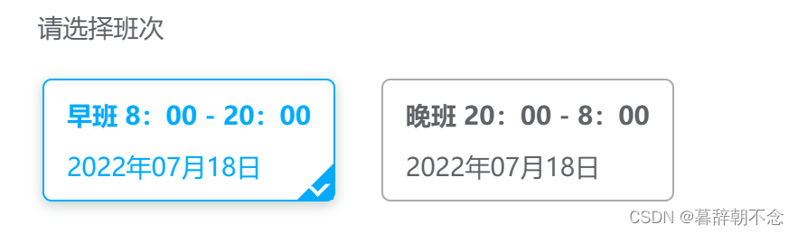
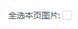

需求：原本的图片列表只能查看，现在需要增加删除功能（附带全选本页）

1
2
3
4
5
| .item {
width: 350px;
height: 200px;
overflow: hidden;
}
|
1
2
3
4
5
6
7
8
9
10
11
12
13
14
15
16
17
18
19
20
21
22
23
24
25
26
27
28
29
| .selected {
box-shadow: 0px 2px 7px 0px rgba(85, 110, 97, 0.35);
border: 1px solid #00aaff;
background-color: #00aaff; //填充图片与容器之间出现的白色空隙
position: relative;
}
.selected:before {
position: absolute;
content: "";
right: 0;
bottom: 0;
border: 10px solid #00aaff;
border-top-color: transparent;
border-left-color: transparent;
}
.selected:after {
content: "";
position: absolute;
width: 4px;
height: 6px;
right: 4px;
bottom: 3px;
border: 2px solid #fff;
border-top-color: transparent;
border-left-color: transparent;
transform: rotate(45deg);
}
|
1
2
3
4
5
6
7
8
|
<div
@click="selectImg(item.id)"
v-bind:class="{ selected: selectedList.includes(item.id) }"
class="item"
>
<img alt="" :src="item.link" style="width: 100%" />
</div>
|
1
2
3
4
5
6
7
8
9
10
11
12
13
14
15
16
17
| const selectedList = ref([]);
const selectImg = (id) => {
if (selectedList.value.includes(id)) {
for (let i in selectedList.value) {
if (selectedList.value[i] === id) {
selectedList.value.splice(i, 1);
}
}
}
else {
selectedList.value.push(id);
}
};
|
实现全选

1
2
3
| <div>
全选本页图片: <a-checkbox v-model:checked="checked" @change="selectAll" />
</div>
|
1
2
3
4
5
6
7
8
9
10
11
12
| let checked = ref(false);
const selectAll = () => {
if (!checked.value) {
selectedList.value = [];
} else {
for (let i in data) {
selectedList.value.push(data[i].id);
}
}
};
|
其它注意点
- 点击删除按钮时需要做一个确认对话框，防止误操作
- 未选中图片时，删除按钮应处于禁用状态
- 参数传给后端时，数组需要使用 toRaw()去掉外层 proxy 对象
- 项目中点击图片有预览效果，非常干扰选中，可以添加样式
img {pointer-events: none;}避免图片被点击后放大
参考
vue 实现点击选中 div 后， 右下角显示对号